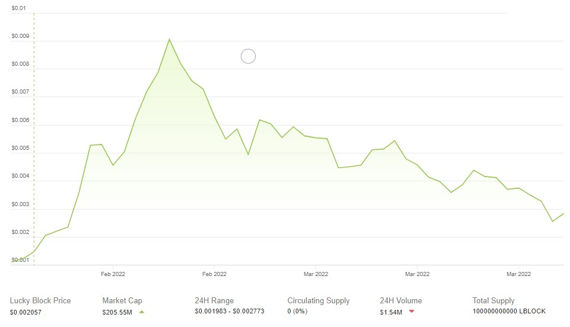
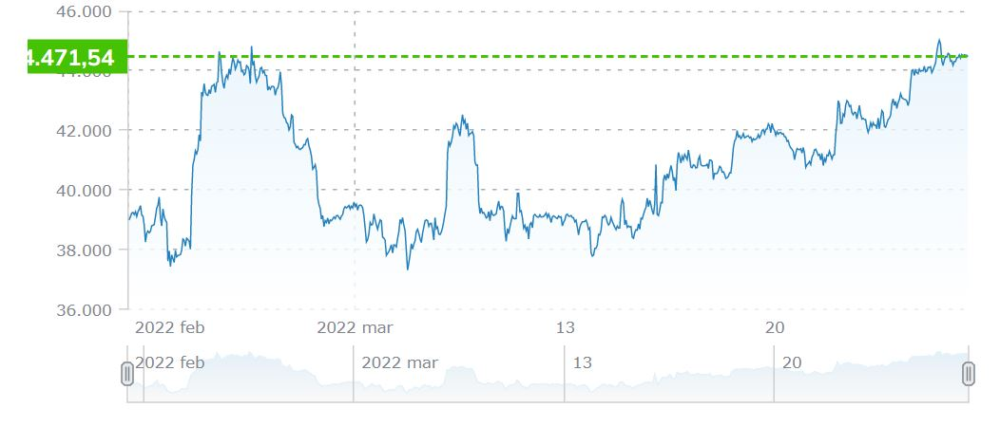
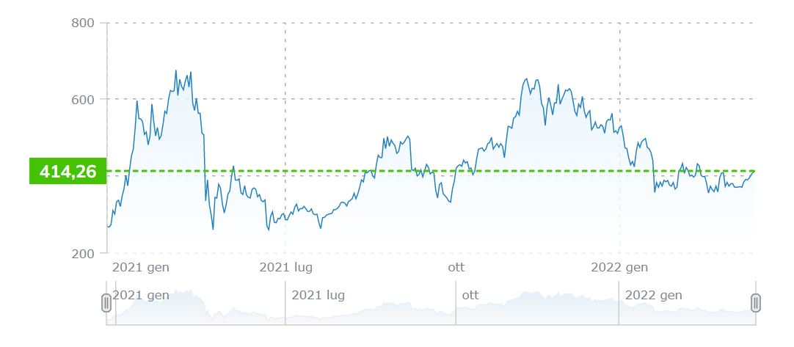
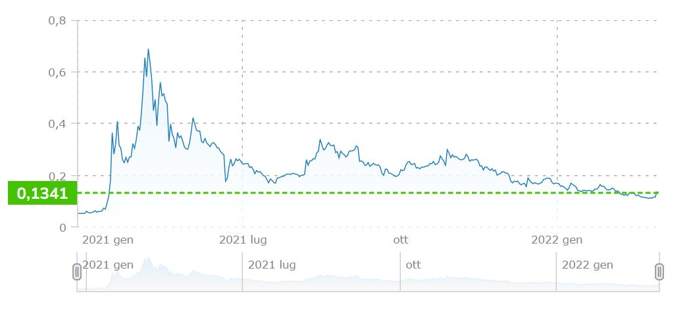
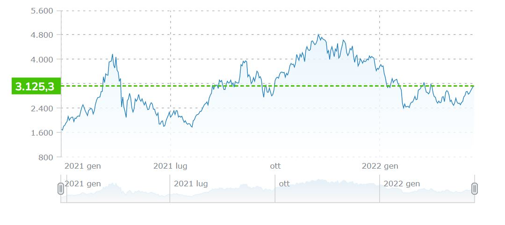

Diamo un occhiata alle migliori crypto per il trading giornaliero
Usa i link seguenti per aiutarti con la navigazione
- Lucky Block (LBLOCK)In generale, la migliore moneta per la compravendita giornaliera
- Bitcoin (BTC)La moneta a più alta quotazione, e liquidità massiccia
- Binance Coin (BNB)La migliore moneta con fondamenti facili da leggere
- Dogecoin (DOGE)La migliore moneta meme del mercato
- Ether (ETH)Una moneta a grande capitalizzazione con un potenziale enorme
CITAZIONI
- MONEYPer i grafici
- ECONOMICTIMESPer la top 5
- CRYPTONEWSPer le novità sul mercato delle cryptovalute
- COINBASEPer le info sui portafogli di criptovaluta
Lucky Block (LBLOCK)
Fluttuazioni di mercato della moneta in questione nell'intervallo di tempo 2021-2022

La migliore criptovaluta per il trading giornaliero, LBLOCK, il token nativo di Lucky Block
Obiettivo principale
Perché scegliere Lucky Block?
"Il nostro obiettivo è sviluppare ulteriore trasparenza ed equità nei giochi" Internet ha creato una domanda per il gioco d'azzardo online, con aziende che offrono scommesse online facilmente accessibili. Quindi, non sorprende che questi siti Web siano in rapida crescita e altamente redditizi. Lucky Block prevede una lotteria mondiale con giocatori che utilizzano protocolli Blockchain, operando sulla Binance Smart Chain. Riteniamo che la lotteria non debba essere vincolata geograficamente o legata ai sistemi finanziari locali. Invece, il nostro obiettivo è sviluppare ulteriore trasparenza ed equità nei giochi, creando una lotteria in cui ogni giocatore ha migliori probabilità di vincita fornendo al contempo una solida strategia di investimento per i possessori di gettoni contribuendo al contempo alla comunità.
COMPRA LUCKYBLOCK Bitcoin (BTC)Fluttuazioni di mercato della moneta in questione nell'intervallo di tempo 2021-2022

Bitcoin usa la tecnologia peer-to-peer per non operare con alcuna autorità centrale o con le banche;
la gestione delle transazioni e l'emissione di bitcoin viene effettuata collettivamente dalla rete.
Che cos'è Bitcoin?
Perché scegliere Bitcoin?
Bitcoin è open-source; la sua progettazione è pubblica, nessuno possiede o controlla Bitcoin e ognuno può prendere parte al progetto. Attraverso alcune delle sue uniche proprietà, Bitcoin permette utilizzi entusiasmanti che non potrebbero essere coperti da nessun altro sistema di pagamento precedente.
COMPRA BITCOIN Binance Coin (BNB)Fluttuazioni di mercato della moneta in questione nell'intervallo di tempo 2021-2022

La migliore moneta con fondamenti facili da leggere
Che cos'è BNB?
Perché scegliere Binance Coin?
È il token nativo di BNB Chain (in precedenza Binance Smart Chain e Binance Chain). Coniato per la prima volta nel luglio 2017 su Ethereum, BNB è un token di utilità che consente ai possessori di pagare commissioni scontate per il trading sull'exchange di Binance. BNB, tuttavia, non fornisce agli utenti una quota dei profitti di Binance, non rappresenta un investimento su Binance né fornisce altri compensi.
COMPRA BINANCE COIN Dogecoin (DOGE)Fluttuazioni di mercato della moneta in questione nell'intervallo di tempo 2021-2022

Dogecoin, la criptovaluta open source e peer-to-peer, amata dagli Shiba Inu di tutto il mondo.
Che cos'è Dodgecoin?
Perché scegliere Dodgecoin?
Dogecoin (DOGE) è basato sul popolare meme Internet" "doge" e presenta uno Shiba Inu sul suo logo. La valuta digitale open source è stata creata da Billy Markus da Portland, Oregon e Jackson Palmer da Sydney, Australia, ed è stata suddivisa da Litecoin nel dicembre 2013. I creatori di Dogecoin l'hanno immaginata come una criptovaluta divertente e spensierata che avrebbe avuto un maggiore appeal arrivando oltre il pubblico principale di Bitcoin, poiché era basata su un meme a tema cane. Il CEO di Tesla Elon Musk ha pubblicato diversi tweet sui social media secondo cui Dogecoin è la sua moneta preferita.
COMPRA DODGECOIN Ether (ETH)Fluttuazioni di mercato della moneta in questione nell'intervallo di tempo 2021-2022

Ether, o ETH, la valuta nativa di Ethereum.